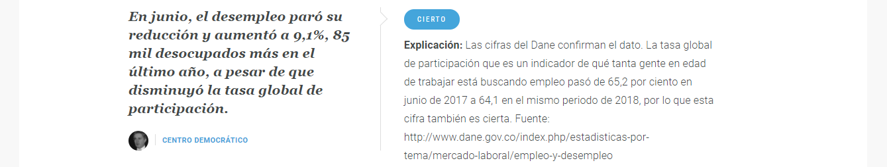

El 7 de agosto Ernesto Macías, presidente del Senado de Colombia, dió en el discurso de poseción del presidente entrante, Ivan Duque, más de 40 datos que demostraban la realidad del país o en palabras de Macías "el país que recibe Duque hoy tiene las cifras más preocupantes de la historia”. La Silla Vacía analizó los datos que Ernesto Macías dió, como resultado final encontrarón que de las 42 afirmaciones 16 son ciertas (incluyendo 9 con salvedades significativas), 3 debatibles, 8 exageradas, 2 apresuradas, 4 inchequeables (no hay datos para decir si son ciertas o no), 6 engañosas y 3 falsas. Lea el artículo completo de La Silla
Sin embargo, una de las afirmaciones calificadas como ciertas dado que los datos en efecto son ciertos, referente al desempleo, el cual siempre será un tema delicado, carecen de contexto, análisis y entendimiento de todos los indicadores que se deben revisar para hablar al respecto. Adicional, La Silla explica la veracidad de esta afirmación basados en que los datos usados son correctos, sin embargo, un calificativo de engañoso podría ser más apropiado. Definiciones oficiales variables de empleo DANE
Para este análsis se toman como los periodos de Uribe: 2003 - 2010 (años completos, total: 8 años) Santos: 2011-2018 Jul (años completos, total: 8 años)
Afirmación Ernesto Macías | Análisis La Silla
PET = Población en edad de trabajar - PEA = Población económicamente activa
Para este análisis se usa el promedio mensual de cada variable, se toma esta desición ya que la afirmación de Macías habla en esta periodicidad. Se puede observar que:
1.El promedio mensual de la población en edad de trabajar muestra una tendencia positiva acelerada, lo cual se refleja en la pendiente de la variable. Esto indica que, durante el periodo de Uribe, había una población más jovén o por debajo de la edad que se cosidera apta para trabajar, lo que conlleva a que el tamaño de la población que podía convertirse en población económicamente actíva del periodo Uribe vs. Santos fue menor.
2.El promedio mensual de la población económicamente actíva mantiene una tendencia creciente estable. Esta variable muestra una similutud con el promedio mensual de ocupados, lo que implicaría que aunque en el periodo de Santo hubo una mayor demanda laboral, esta habría sido atendida proporcionalmente.
3.El promedio mensual de la población desocupada ha sido durante el periódo analizado estable, esto implica que aunque Macías afirmó que en el último año han habído más desocupado la tendencia no respalda esta afirmación. Adicional, si se revisa la variación mensual del promedio YTD del 2017 vs. 2018, en terminos netos hubo un aumento de 61 personas, lo que significa, un aumento en términos porcentuales del 2.5% YTD.
Author: Monica Marcela
Carvajal
@MoniMCarva
@Monica
Carvajal
Information about the project